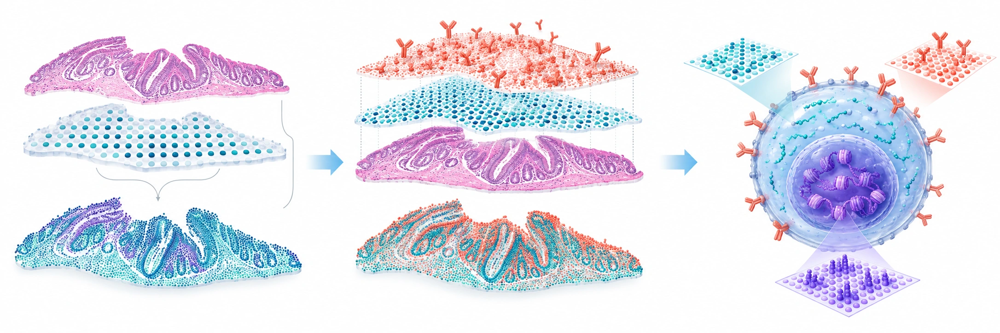

Foundation Model
Transferring knowledge from pretrained biological models to unified multi-omics representations.
Bioengineering
宋兆祺
johs51653@gmail.com
M.Eng. student
Xiamen University
Multimodal learning · Computational biology
I develop multimodal models that connect molecular measurements with cellular states, from Any-to-Any multi-omics completion to spatial tissue reconstruction.
Hello! I am Zhaoqi Song, currently an M.Eng. student in Bioengineering at Xiamen University. I am advised by Prof. Chaoyong Yang and expect to graduate in June 2027. Before joining Xiamen University, I received my bachelor's degree in Bioinformatics from Fujian Medical University in June 2024.
My work sits at the intersection of computational biology, bioinformatics, deep learning, and spatial transcriptomics. My current focus is on foundation models for virtual cells, particularly Any-to-Any completion of single-cell multi-omics profiles, alongside multimodal methods for spatial omics and biomedical discovery.
Transferring knowledge from pretrained biological models to unified multi-omics representations.
Modeling cellular identity, perturbation responses, and biological ageing from incomplete molecular profiles.
Integrating tissue images and molecular measurements to resolve spatial organization at cellular scale.
Developing interpretable, reproducible AI methods to connect complex biological data with biological questions.
Reconstruct missing RNA, protein, or chromatin accessibility from any available modality or combination. A shared virtual cell representation for downstream biological analysis.
Read & search the manuscript
Contrastive multimodal prediction of spatial proteomics from H&E and spatial transcriptomics.
Read & search the manuscriptMultimodal super-resolution reconstruction of spatial gene expression and tissue structure.
Explore the projectM.Eng. in Bioengineering
Bachelor’s degree in Bioinformatics
Research Intern Hong Kong S.A.R.
Working with Dr. Ye Du and Qian Niu on foundation-model distillation for Any-to-Any multi-omics completion and virtual cell modeling.
scAnyOmicsMultimodal virtual cellsResearch Intern Tokyo, Japan
Working with Qian Niu at the Matsuo-Iwasawa Lab on scAnyOmics, with applications in cell-type annotation, perturbation response, and biological ageing.
scAnyOmicsFoundation models for biology* indicates co-first author
Chinese Institute for Brain Research Winter School
Peking University, Beijing, China
2025
Visiting Research Intern
Department of Bioinformatics, Prof. Yong Zhang Laboratory, Tongji University
2023
Outstanding Undergraduate Summer Camp
Shanghai Institute of Precision Medicine, Shanghai Jiao Tong University
2023
Outstanding Undergraduate Summer Camp
Liangzhu Laboratory, Zhejiang University
2023
Outstanding Undergraduate Summer Camp
School of Basic Medical Sciences, Southern Medical University
2023